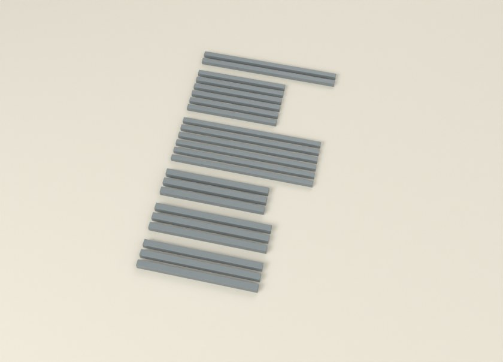

1
Parçaları kes

ABCDEF| Kod | Parça | Profil | Boy (mm) | Adet |
|---|---|---|---|---|
| A | Ön ayak | 25×25 | 445 | 3 |
| B | Arka ayak | 25×25 | 445 | 3 |
| C | Sırt dikmesi (alt ucu 6° açılı) | 25×25 | 404 | 3 |
| D | Oturak ön ve arka rayı | 20×20 | 562 | 8 |
| E | Yan ray (oturak ve alt bağlantı) | 20×20 | 370 | 8 |
| F | Alt orta bağlantı | 20×20 | 568 | 2 |
- Toplam 27 parça. Boylar resimde ve yandaki listede; aynı harfli parçalar aynı boyda.
- Aynı boydakileri üst üste koyup karşılaştır: bir milimetre fark çerçeveyi yamultur.